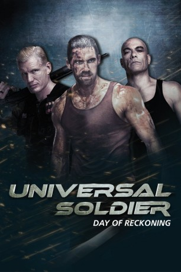

#6084 Universal Soldier 4 - Day of Reckoning
 
 IMDB-Wertung: 5.0 / 10
IMDB-Wertung: 5.0 / 10  Metascore: 0
Metascore: 0 
Hilflos muss John mit ansehen, wie Luc Deveraux seine Frau und seine Tochter kaltblütig ermordet. John schwört Rache und macht Jagd auf den vermeintlichen Killer. Doch dabei stößt er auf ein mysteriöses Programm, das sich Universal Soldier nennt. Er ahnt nicht, dass er auf eine falsche Fährte gelockt wird. Der Abtrünnige Andrew Scott hat den größenwahnsinnigen Plan, die Universal Soldiers zu befreien und mit ihnen die Weltmacht zu übernehmen...
Jahr: 2012
Dauer: 113 Minuten
FSK: 18
Land: USA Studio: Magnet ReleasingTonspuren: DTS - ,
Untertitel: Deutsch,
Auflösung: 720p (1280x544) Größe: 5017 MB
Genre: Action, Thriller, Horror, Sci-Fi, Mystery
Regisseur: John Hyams
Drehbuch: David Cohen
Soundtrack:
Darsteller:
 Jean-Claude Van Damme als Luc Deveraux
Jean-Claude Van Damme als Luc Deveraux Dolph Lundgren als Andrew Scott
Dolph Lundgren als Andrew Scott Scott Adkins als John
Scott Adkins als John- Mariah Bonner als Sarah
- Andrei Arlovski als Magnus
- Tony Jarreau als Bouncer
 Craig Walker als Earl
Craig Walker als Earl- Andrew Sikking als Larry
 James DuMont als Dr. Brady
James DuMont als Dr. Brady David Jensen als Dr. Su
David Jensen als Dr. Su- Audrey P. Scott als Emma
 Rus Blackwell als Agent Gorman
Rus Blackwell als Agent Gorman Dane Rhodes als Ron Castellano
Dane Rhodes als Ron Castellano Kris Van Damme als Miles
Kris Van Damme als Miles- Sigal Diamant als Claudia
 Juli Erickson als Woman
Juli Erickson als Woman Roy Jones Jr. als Mess Hall Unisol
Roy Jones Jr. als Mess Hall Unisol Mike Seal als Unisol
Mike Seal als Unisol Casey Pieretti als Unisol
Casey Pieretti als Unisol Esteban Cueto als Unisol
Esteban Cueto als Unisol Woon Young Park als Unisol
Woon Young Park als Unisol Dennis Keiffer als Unisol
Dennis Keiffer als Unisol Luke Hawx als Unisol
Luke Hawx als Unisol Jean Claude Leuyer als Unisol
Jean Claude Leuyer als Unisol- David Anthony Buglione als Unisol
- Andre McCoy als Unisol
 Trace Cheramie als Unisol
Trace Cheramie als Unisol Arnold Chon als Unisol
Arnold Chon als Unisol Mike Wilson als Unisol
Mike Wilson als Unisol- Lloyd Pitts als Unisol
- Mike Mayhall als Unisol
- John Ashker als Unisol
 Brett Beoubay als Bar Patron , uncredited
Brett Beoubay als Bar Patron , uncredited Ross P. Cook als Unisol , uncredited
Ross P. Cook als Unisol , uncredited- Robert Douthat als Lab Tech , uncredited
- Sebastian James als Unisol , uncredited
- Austin Naulty als Unisol , uncredited
- Blaire Noonan als Hot Blonde , uncredited
- Jeremy Sande als Unisol , uncredited
- Christopher Severio als Soldier , uncredited
- Susan Mansur als Madame
- Michelle Jones als Kathryn
- Wes Shivers als Unisol
- Chris Bryant als Unisol
- Kerry Wong als Unisol
- Cale Schultz als Unisol
- Raion Hill als Unisol
- Tyler Lee Ethridge als Unisol , uncredited
- Gene Kevin Hames Jr. als Bar Patron , uncredited
- Ken Massey als Club Patron , uncredited
Datei: X:\FSK18-Collections\Universal Soldier\Universal Soldier 4 - Day of Reckoning (2012, FSK18, 1280x544).mkv seit 28.04.2017
Festplatte: FSK18
 Es gibt insgesamt 7 Filme in der Gruppe 'FSK18-Collections\Universal Soldier'
Es gibt insgesamt 7 Filme in der Gruppe 'FSK18-Collections\Universal Soldier'